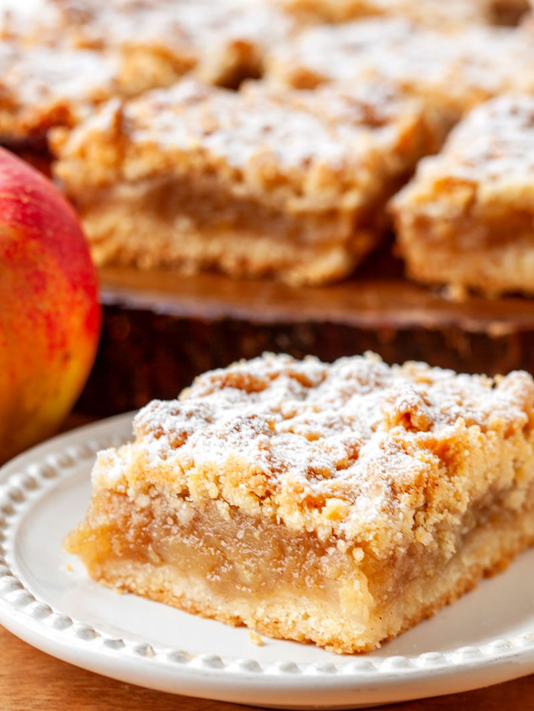
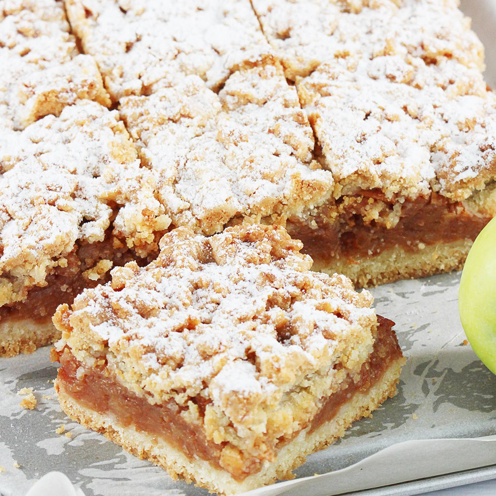
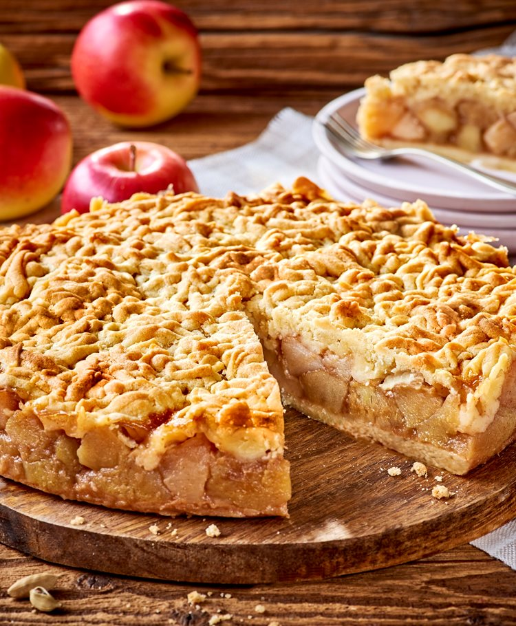

Składniki:
Jabłka
- 1,5 kg jabłek
- 5 łyżek cukru
- 1/2 łyżeczki cynamonu
Ciasto
- 320 g mąki (2 szklanki)
- 250 g zimnego masła
- 1,5 łyżeczki proszku do pieczenia
- 5 łyżek cukru
- 1 łyżka cukru wanilinowego
- 1 jajko
- Do posypania cukier puder
Przygotowanie
- Jabłka obrać, pokroić na ćwiartki i wyciąć gniazda nasienne. Pokroić na mniejsze kawałki i włożyć do szerokiego garnka lub na głęboką patelnię.
- Dodać cukier i cynamon i smażyć przez ok. 20 minut co chwilę mieszając, aż jabłka zmiękną i zaczną się rozpadać.
- Do mąki dodać pokrojone w kostkę zimne masło, proszek do pieczenia, cukier i cukier wanilinowy.
- Składniki połączyć w jednolite ciasto (mikserem lub ręcznie), pod koniec dodać jajko (ciasto będzie dość miękkie).
- Podzielić je na pół i włożyć obie połówki do zamrażarki na ok. 15 minut.
- Piekarnik nagrzać do 180 st C. Przygotować formę(np tortownica średnica 26 cm).
- Wyjąć jedną połówkę ciasta z zamrażarki, pokroić nożem na plasterki i wylepić nimi spód formy. Następnie wyłożyć na to jabłka.
- Pozostałe ciasto zetrzeć na tarce bezpośrednio na jabłka (lub pokroić ciasto na plasterki i ułożyć na wierzchu).
- Wstawić do piekarnika i piec przez ok. 50 minut lub na złoty kolor. Upieczoną szarlotkę przestudzić i posypać cukrem pudrem.


